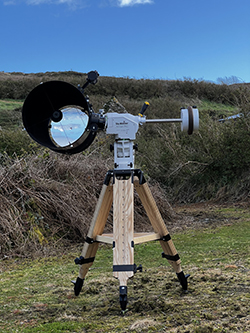

"down-the-tube" view of a 12" Newtonian
click the image for a larger annotated view
If you’re reading this, the chances are you’ve just got yourself a Newtonian reflector, and have realized perhaps belatedly that “Newts” come with a problem: they need “collimating”.
Which is to say, its optical components need lining up. BY YOU. Yikes, you think.
Collimation Definition: Alignment and coincidence of the principal axes of the telescope's optical components: the primary mirror axis, and the eyepiece-focuser axis.
When you buy a refractor, the object most people imagine from the word "telescope", you naturally and reasonably expect all its optical components (lenses) to have been
properly aligned by a professional before delivery, and that you’ll never to have to adjust anything for the lifetime of the scope. Imagine buying a refractor where you have to
align all the lenses yourself.
Unfortunately, when you buy a Newtonian reflector, that is exactly what you get: an assembly of roughly-near-the-right-place components where the job of finely aligning everything
is down to you. Also unfortunately, the image you'll see through an eyepiece is highly sensitive to the correctness of the collimation. An out-of-collimation reflector will
show horrid images. That Newtonians get supplied like this seems unfair and unreasonable: a marketplace aberration that shouldn’t be allowed. Like delivering you a car whose
wheels and suspension you have to align and tune yourself.
There are in fact good reasons why this is so. Big Newtonians are designed to be regularly dismantled and re-assembled, requiring a recollimation every time. You’d struggle to fit
a fully assembled 12” Newtonian into a normal vehicle. Anything bigger is nigh impossible.
Luckily, collimating a Newtonian is not difficult, although it may seem so at first. There is no shortage of websites, books, articles and forums describing how to do it, nonetheless
I still feel there is room for another one. None of the descriptions I’ve read strikes the right balance of what “things” you should do, why you should do them, how important they
are, and the consequences of not getting one or another quite right. In other words, which steps are crucial, and which perhaps don’t matter so much.
Before describing the collimation process itself, it’s worth first describing a Newtonian, and various terms.
article under construction ... watch this space (6th Oct 2023) ...